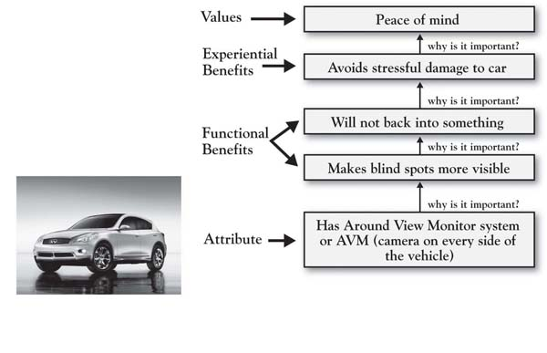
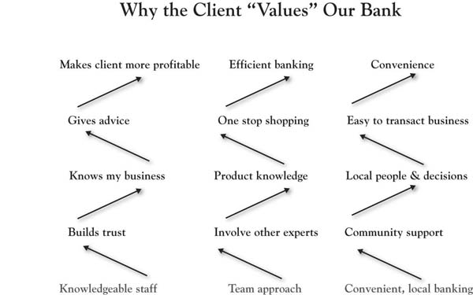

A fundamental goal in the 3-Circle growth strategy process is to learn about customer value; first, estimating customer judgments from our own perspective, and then, obtaining customers’ actual perceptions of value, importance, and beliefs about our firm and the competitive firm. There are a few key lessons in two separate areas that we will discuss here: executive estimates and actual customer self-reports.
For several reasons, it is initially very important for the executive team to provide their own estimates of customer value before getting feedback from customers.We use the term “customers” (as opposed to “consumers”) to provide a general reference that would cover both business-to-consumer and business-to-business markets. It is important to note, however, that the term is not meant to refer only to current customers. Generally speaking, there is value in sampling current customers, potential customers who have never tried your offering, and especially customers who have tried your offering but whose business you have lost. First, it forces you and the team to think through the kinds of questions you will eventually ask of customers and how you might ask them. Second, in requiring the team to come to a consensus about expected customer evaluations, it may create conversations that have never really been explored before—vital conversations around the core value issues of the business. Finally, these estimates provide a foundation against which to compare actual customer beliefs that you obtain later. After you have conversations with customers, you may find that your team was right on the mark in anticipating customer perceptions. Alternatively, you may reveal areas in which your expectations were very different from what customers said. It is critical to note that in these differences exist potentially enormous growth opportunities. So, in this way, surprise is a good thing because it will help motivate the subsequent actions to close the gaps.
The first thing that must be done is to estimate a list of customer reasons for choice. You got some exposure to this in Chapter 3 "Defining the Context" (recall the “service station A versus service station B” exercise). The way to do the exercise is to sit down for a 5- to 10-minute time frame and write down as many reasons you can think of why people would purchase your brand over the competitors. Then repeat the exercise, thinking of why customers might choose the competitive brand over yours. A key here is to pretend: step into the shoes of your customers.
Ultimately, reasons why people make choices will be stated as either attributes or benefits. To illustrate, consider that the president of a regional bank defined a project around the following context statement: “My goal is to figure out how my bank can grow by creating more value for and attracting new small business loan and deposit clients relative to their current banks.”
Note that in a given region, there are many banking players, so market share is spread out over a variety of competitors. As such, this executive and his team felt it best to define the competitor as the “current bank” and to allow the target competitor to vary as needed. In the preliminary estimation of the reasons for choosing one bank over another for loan and deposit business, the bank’s president surveyed nine different regional managers reporting to him, who, together, defined the following list:
This is a very good list that covers both the numerator of the value ratio (i.e., benefits such as timeliness of service, trust, and security of the bank) and the denominator (i.e., fair and open pricing). As we will see, subsequent conversations with customers helped the team refine the list and statement of reasons. There are a couple of important pieces of advice here as you explore the reasons:
Given a list of attributes and benefits, we would next have our executive team estimate customer perceptions of the importance of those attributes, as well as customer beliefs about our brand and the competitive brand on each dimension.Although, as we know, growth projects can be defined in almost any context (e.g., internal company projects, personal projects, projects for charities), for simplicity in our description of the process in these chapters, we refer to the company unit of analysis as “the firm” and the two alternative choices as “our brand” and the “competitive brand.”
Estimate customer beliefs about our brand and competitive brand. To understand how to think about beliefs, it is important to understand the insights needed to effectively judge competitive positions. There are two relevant reference points:
The gathering of insights from customers is a critical step in developing growth strategy. It is not as difficult as it seems. Here are a few rules to guide the effort.
Rule 1: Just do it, even if it is only a small sample. For a start, interview 5 to 10 customers. Ironically, there is often initial resistance among executives to talk to customers about issues of value. The most common counterarguments are either “we already know what customers want” or “what will we be able to tell by talking to only a few customers?” The resistance is natural and logical. But this is one time when you need to suspend belief. In addition, it is not that difficult and costs very little. What do you ask? Essentially, you can ask the same basic questions that the members of the executive team just answered—(a) how important is each of the attributes and benefits on the list, and (b) how do customers evaluate our offer and the competitors’ offers on those dimensions? When you are asking the right questions, you will find insight, even though such a sample is too small to make inferences about the larger population (see next paragraph). Open-ended interviews with customers—whether on the phone or in person—are thought provoking and may identify some obvious problems that require immediate exploration or even quick fixes. More generally, they will uncover issues that require deeper study and that even a small number of customers will really appreciate.
Rule 2: Don’t get too carried away with your conclusions from small samples. So what happens once you actually sit down with a few customers? You obtain new insights that contrast, and may even contradict, your previous beliefs. In other words, you will learn. You also find that customers are appreciative. And you may see opportunities to make some short-term moves that will correct problems and improve your value. So we find a surprising aggressiveness among executives to act on this small-sample feedback because it tends to be powerful and energizing. Take care, though. It is not a good idea to make major investment decisions based on feedback from 1 or 5 or 10 customers. These initial interviews often, at best, provide you with a structure for further refining your hypotheses about the value customers seek from your organization. If well selected, insights from this small sample will (a) potentially have some immediate implications for fixing problems of which you were unaware, (b) identify longer-term growth opportunities to explore, and (c) provide the basis for further study with larger samples. We caution against running too far with the inputs from a small number of qualitative interviews without testing those conclusions on larger samples, however (unless those customers selected for the survey account for a significant portion of your company’s revenue). The primary mandate is that those who you interview or survey are representative of the customer segment you have selected for the project.
Returning to our bank example, recall that the regional managers (RMs) for the bank estimated the following four attributes at the top of the list for small-business customers:
In fact, the president conducted individual, in-depth exploratory interviews with a diverse group of seven small-business employees who had just started doing business with the bank during the previous 9 months (all from different industries). Interestingly, as a group, the small sample of business people framed the value they were looking for somewhat differently than the RMs. The small-business customers felt that the bank’s unique value was tied to (a) the knowledge of its staff and their willingness to advise (as opposed to simply sharing knowledge), (b) the fact that the bank was locally owned and cared about its community, and (c) the team approach the bank used in providing service. There were two surprises. First, the importance of local community involvement was greater than the RMs expected. Second, the “team approach” did not even make the RMs’ top-10 list of attributes but was of central importance to customers!
Now, why is the team approach important? Here is where we need to think deeply.There are a variety of research approaches that are used for understanding deeper customer motivations for purchase and consumption behaviors that consumers may have a difficult time articulating. For excellent discussions of projective research techniques, see Wilkie (1994); Churchill (1999); and Madison (2005). Gerry Zaltman’s well-known work in the use of metaphor in studying consumer motivations is the topic of a recent book Zaltman and Zaltman (2008). For insight into laddering, see Reynolds and Gutman (1988; footnote 5); Reynolds (2006); and Wansink (2003). In the 3-Circle growth strategy process, laddering research is undertaken as a systematic effort to drill down into the needs and values that truly drive customer decision making. Laddering is a research method that might be described as “root-cause analysis” with customers. The method seeks to uncover the underlying values or reasons why certain attributes are important and influence decision making by asking, “why is that important?” in a sequence of questions. As an illustration, a team from the Infiniti automobile brand used laddering on 25 attributes of a new car design to “identify the core value embodied by or most closely associated with each feature.”Schroder (2009, October 23), p. 28. Figure 4.4 "Ladder for Infiniti M35 Design: Around View Monitor" shows the aggregate ladder that emerged when consumers were asked why they felt the “around view monitor” with video on all sides of the car was important. Based on the research across all the attributes, the strategy and planning teams were able to prioritize new features according to the core values of the target market and make feature rollout recommendations based on the laddering research. The Infiniti EX35 is the first model to have the around-view-monitor (AVM) feature.
In the banking case, laddering with the customer respondents revealed they were driven by both time and profitability (not surprising for small businesses!). Figure 4.5 "Ladders for Small Business Bank Customers" provides the laddering results for the three top attributes, as identified by our bank president. Note that the bank’s team approach creates value for small-business customers by leveraging the knowledge of many people (less likely to miss something), and also by creating a more efficient process. The truth is we could push this ladder further—with a couple more “whys”—we would likely find out that an efficient process is important because there are so many other things that a small-business person has on the plate, and that time is one of their most precious commodities.
Figure 4.4 Ladder for Infiniti M35 Design: Around View Monitor
Figure 4.5 Ladders for Small Business Bank Customers
It is important to note that the deeper values that you reach via laddering and other qualitative research techniques tend to reveal a lot about how we are hardwired as human beings. Across different countries and industries, the following types of values often emerge in laddering studies and other studies of values:
To illustrate, Figure 4.6 "Ladder for Customer of Research Services" presents a ladder from a 3-Circle growth strategy study conducted by a research supplier that sells research services to brand managers in particular consumer-package-goods categories. Although a totally different context and a different attribute than the Infiniti (in this case, simply vendor familiarity), the end value is the same: peace of mind.
Figure 4.6 Ladder for Customer of Research Services